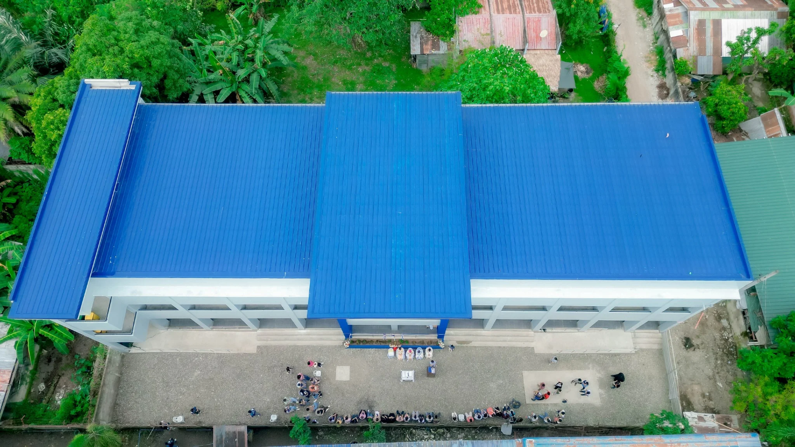
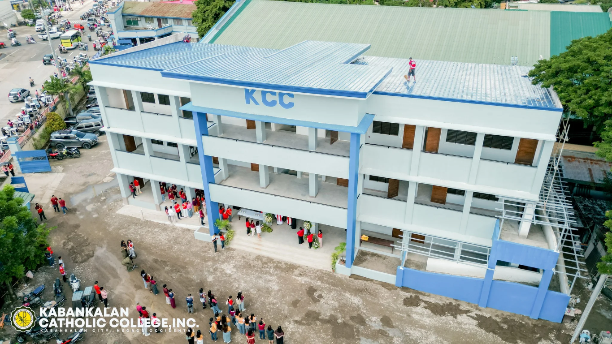
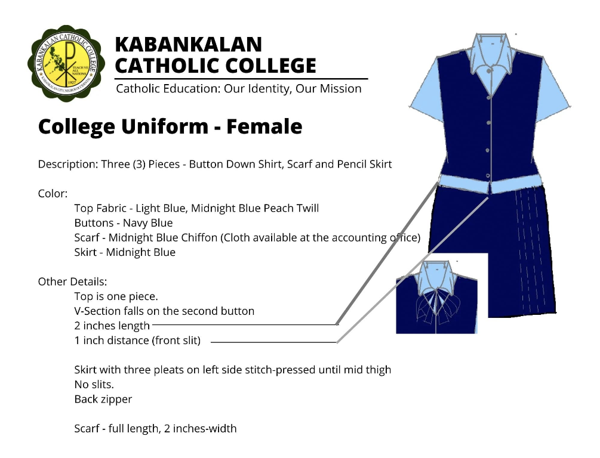
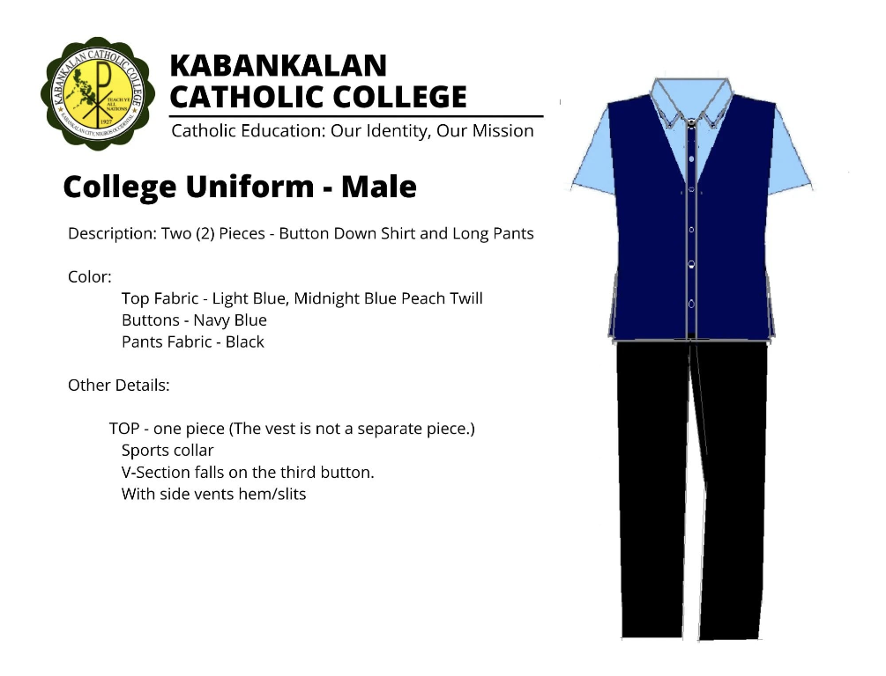

FaithFormation
Faith and Reflection
Activities that encourage spiritual growth and personal reflection.
Activities that encourage spiritual growth and personal reflection.
Creative opportunities to express talent and celebrate community.
Projects that bring learning into meaningful service.
A celebration of CMAT students, talents, and community spirit.
A celebration of CEAS students, talents, and community spirit.
A week of activities celebrating the Kabankalan Catholic College community.
A KCC celebration of culture, talent, and school spirit.



View full-size pictureThree pieces: button-down shirt, scarf, and pencil skirt.

View full-size pictureTwo pieces: button-down shirt and long pants.